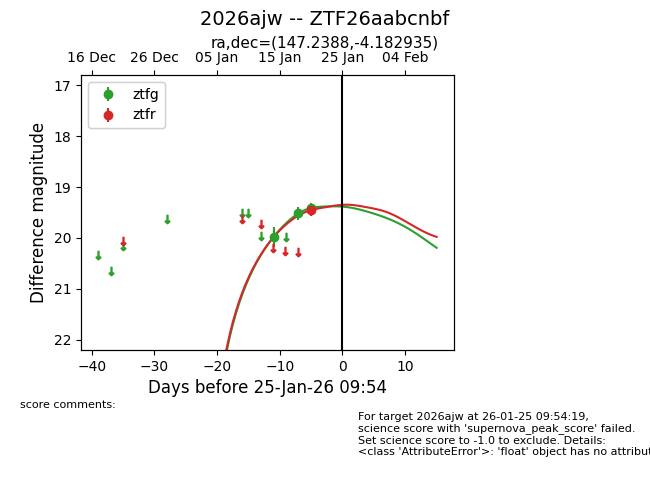
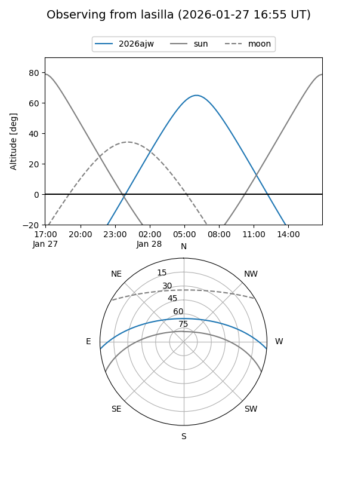
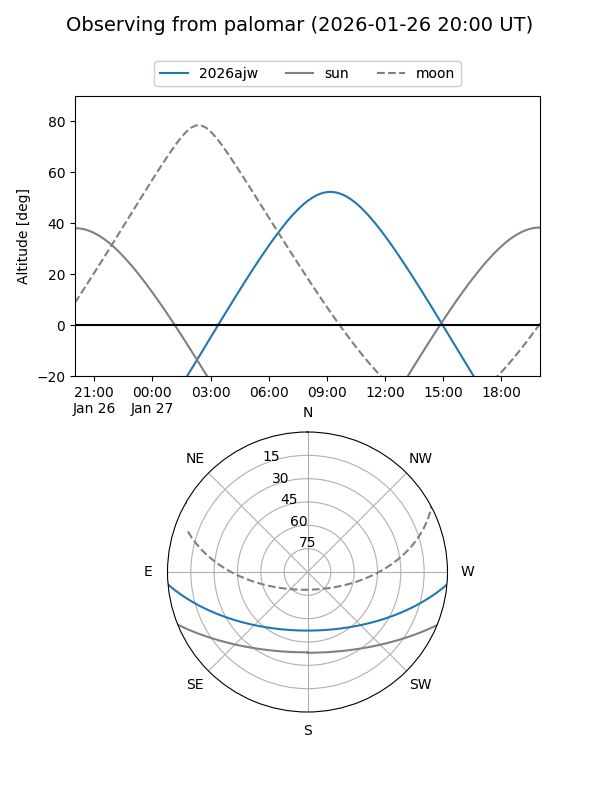
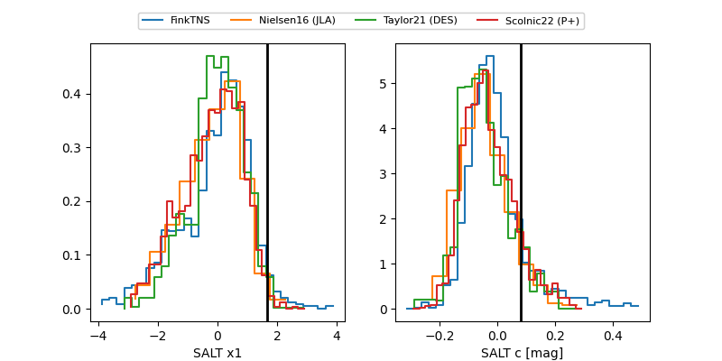

2026ajw
Target 2026ajw at 2026-01-25 02:16
Aliases and brokers:
FINK: link
Lasair: link
ALeRCE: link
TNS: link
YSE: link
alt names
ZTF26aabcnbf (ztf,fink_ztf)
2026ajw (tns,yse)
Coordinates:
equatorial (ra, dec) = 147.2388,-4.18293
equatorial (HMS+DMS) = 09:48:57.30,-04:10:58.57
galactic (l, b) = (241.1802,+35.98291)
Flags:
Photometry:
last ztfg=19.41, ztfr=19.46
3 ztfg, 1 ztfr detections
Lightcurve

Visibility


Additional plots
